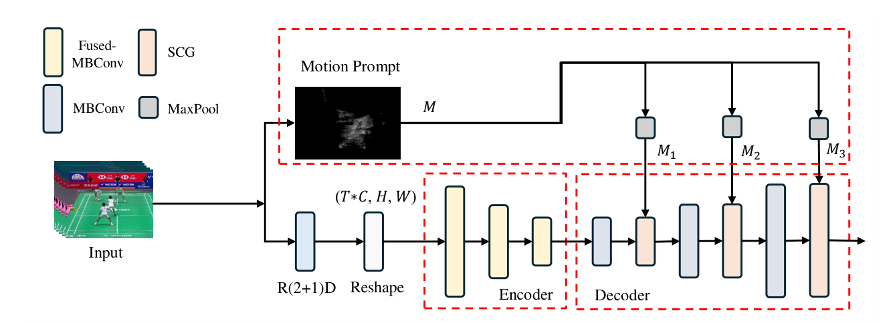
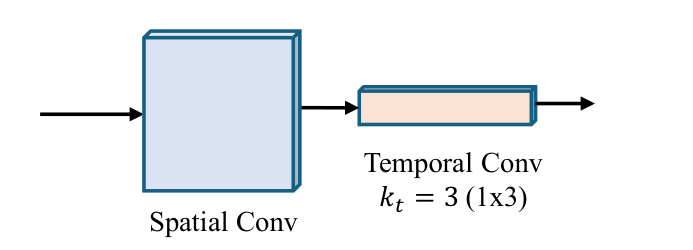
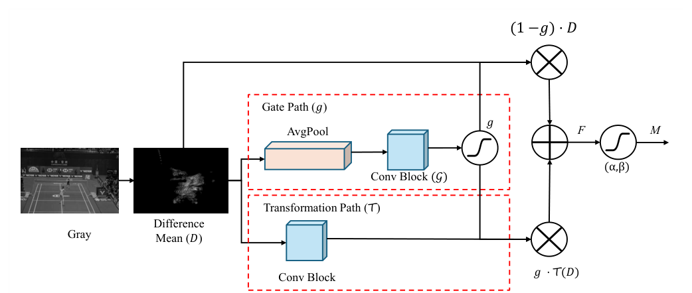
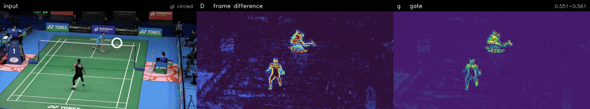
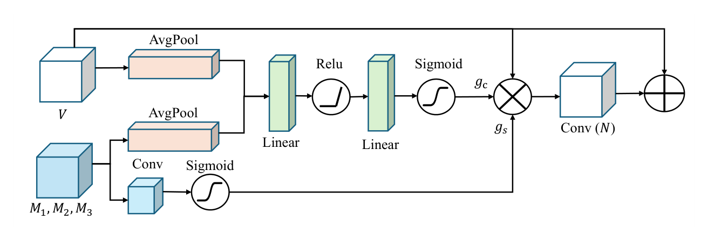
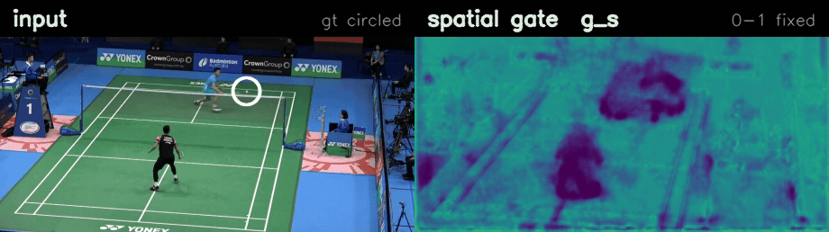

TrackNetV3 (left) and TrackNetV5-Lite (right) on the same rally
Abstract
Shuttlecock tracking is challenging due to the object's small size, extreme speed,
and severe motion blur. While current models like TrackNetV4 achieve high precision,
they rely on 2D convolutions to implicitly handle temporal relationships, failing to
capture complex spatiotemporal dynamics. We propose TrackNetV5, which
introduces multi-scale R(2+1)D blocks for explicit spatiotemporal feature extraction
and a gated residual motion prompt layer for high-quality motion attention.
Furthermore, a spatial-channel-gate module adaptively fuses motion priors with visual
features across multiple decoder layers. Experimental results show that TrackNetV5
achieves a state-of-the-art F1-Score of 98.47. We also present
TrackNetV5-Lite, which maintains a high F1-Score of 98.06 with only
2.58M parameters, demonstrating significant potential for real-time edge deployment.
Method

The architecture of TrackNetV5. The network explicitly models spatiotemporal dynamics through R(2+1)D blocks. Motion priors are integrated into the MBConv-based decoder via multi-level SCG fusion.
TrackNetV5 is an end-to-end spatiotemporal U-Net. An input tensor of shape
(T, C, H, W) is branched into two paths. The
motion branch produces a motion prior that is downsampled by max
pooling to match each decoder stage. The visual branch passes the
frames through an R(2+1)D block and reshapes them to (T·C,
H, W) for the backbone. The encoder uses Fused-MBConv blocks for
rapid early feature extraction; the decoder uses MBConv blocks combined with the SCG
module.
A width multiplier α scales every layer's channel count, giving a family of
models rather than a fixed configuration:
Cα = α × C (1)
1. Spatiotemporal modeling with R(2+1)D blocks
Previous TrackNet methods stack consecutive frames along the channel dimension,
treating a temporal sequence as a static spatial representation. TrackNetV5 instead
factorises a 3D kernel of size t×d×d into a spatial
convolution of size 1×d×d followed by a temporal convolution of
size t×1×1. Decoupling spatial appearance from temporal dynamics simplifies
optimisation and cuts both parameter count and computation, which is what makes
real-time edge deployment feasible.
In practice the temporal half acts as an implicit background suppressor: a
per-frame 2D convolution cannot separate the static court markings from the
moving players, so that structure propagates to the bottleneck, while the
factorised block removes it in the first layer.

R(2+1)D block architecture. The 3D convolution is decomposed into a spatial convolution and a temporal convolution to capture both appearance and motion dynamics.
2. Gated residual motion prompt layer
From a grayscale sequence X, absolute frame differences are aggregated into a
mean difference map D:
D = meant |Xt+1 − Xt| (2)
A gate path decides, per pixel, how much of the raw difference to keep and how much to
replace with a learned transformation. The temperature τ is learnable and
constrained to [0.25, 4.0]:
g = σ( ConvG(AvgPool(D)) / τ ) (3)
F = (1 − g) ⊙ D + g ⊙ T(D) (4)
M = σ( α·F + β ) (5)
Unlike the static frame differencing of TrackNetV4, the gate suppresses background
noise while preserving fine-grained motion detail.

Architecture of the gated residual motion prompt layer. The module extracts grayscale frame differences and uses a gated mechanism to adaptively fuse raw motion signals with transformed features, regulated by a learnable temperature τ.

The input, the frame difference D, and the gate g that decides how
much of D survives into the prior. g spans
0.55–0.56 across the clip and is stretched over that range here, one range for
the whole clip so nothing flickers.
3. Spatial-channel-gate fusion
The SCG module fuses the motion prior M with visual features V at
three decoder levels. A channel gate decides what to attend to from the
pooled statistics of both inputs, and a spatial gate decides where, from the
motion prior alone:
gc = σ( MLP( [GAP(V), GAP(M)] ) ) (6)
gs = σ( Conv(M) ) (7)
Eq 7 as printed does not describe the implementation. The spatial gate is computed
from the channel mean of V, not from M — which is what CBAM,
cited here as the inspiration, actually does, and what the authors confirm their code
does. Driving it from M instead makes it inert: the prior is sparse enough
that after a 3×3 convolution the sigmoid sits in its linear region and the gate
spans 0.39–0.50 across the whole frame, weighting every pixel alike.
V′ = V + N( (V ⊙ gs) ⊙ gc ) (8)
The residual form means fusion refines the visual features rather than replacing them.

Architecture of the proposed SCG. The module uses parallel spatial and channel attention inspired by CBAM to fuse visual features V with motion priors M, with a residual connection for robust feature preservation.

The spatial gate gs at the finest decoder level, on a fixed 0–1 scale.
Prediction comparison
Left: TrackNetV3 with its released weights. Right: TrackNetV5-Lite. Both are the
tracking network alone, without trajectory rectification. The marker is the
predicted position and the trail covers the previous 16 frames.
Accuracy, precision, recall and F1 in %, 4 px tolerance. FPS measured on an RTX 5080.
Model
Params
Acc.
Prec.
Recall
F1
FPS
TrackNetV4
11.34M
96.58
99.56
96.48
97.99
118.81
TrackNetV5
10.09M
97.37
99.72
97.25
98.47
60.70
TrackNetV5-Lite
2.58M
96.69
99.59
96.57
98.06
135.18
TrackNetV5-Lite reaches an F1-Score of 98.06 at 135.18 FPS with 2.58M parameters —
exceeding TrackNetV4 on every accuracy metric while running faster and using less than
a quarter of the parameters.
Released models
Both trained from scratch on train and val, with
test never in a gradient step.
File
α
Batch
Epochs
F1
Threshold
releases/TrackNetV5_Lite_best.pt
0.5
10
30
98.363
0.35
releases/TrackNetV5_best.pt
1.0
4
30
98.331
0.30
These figures are reproductions: they come from this repository's own training runs
and are measured with evaluate.py. The numbers the paper reports are in
the Results table above.
Code
The network, the training script and the released Lite checkpoint are in the
repository. The model is
selected by name: TrackNetV5.
Data
The dataset is not in the repository. It is the shuttlecock set released with
TrackNetV3: 26 broadcast matches cut into rallies, every frame labelled with the
shuttlecock position and a visibility flag. Place it under data/ as
{train,val,test}/match<N>/frame/<rally>/<i>.png with
the matching corrected_csv/, and keep drop_frame.json at
the top level — evaluation skips those frames.
Then run preprocess_images.py once. It writes
data_288x512/ at the working resolution and stores a per-rally median
frame beside it. That median is not an optimisation: subtract_concat
builds the fourth input channel from it, so training cannot start without it.
Evaluation
Score the released checkpoint on the test split:
python evaluate.py --weights releases/TrackNetV5_Lite_best.pt --split test
Training
This is the command that produced the released Lite weights:
The full-width model is the same command with --model_alpha 1.0
and --batch_size 4. --train_splits and --eval_split name the
splits directly rather than reading them from a config, which keeps what a run
was trained on and scored on visible in the command that produced it.
BibTeX
@inproceedings{chang2026TrackNetV5,
title = {TrackNetV5: Robust Shuttlecock Tracking via Motion Prompts
and Spatiotemporal Attentive Fusion},
author = {Chang, Run-Lin and Wang, Yu-Shuen and Huang, Jiun-Long},
booktitle = {Proceedings of IEEE International Conference on Image Processing (ICIP)},
month = {September},
year = {2026}
}
Acknowledgements
This work rests on TrackNetV3 and TrackNetV4. TrackNetV3 contributed the shuttlecock
dataset in the form used here, the weighted binary cross-entropy loss, the sample
mixup, and the released weights that let us check our measurements against a
known model. TrackNetV4
contributed the motion attention idea that the prompt layer builds on. We are
grateful to both groups for publishing their code and weights; without them none of
the comparisons on this page would have been possible.
The evaluation protocol is TrackNetV4's. Their paper reports on the
10,836 frames that drop_frame.json marks as played, at a 4 px tolerance
and without trajectory rectification, and that is what every figure here is measured
on. Running the released TrackNetV3 weights through our evaluation returns F1 97.59
against the 97.5 their table reports for the same model, which is what pins the
protocol.
@inproceedings{chen2023tracknetv3,
title = {TrackNetV3: Enhancing shuttlecock tracking with augmentations
and trajectory rectification},
author = {Chen, Yu-Jou and Wang, Yu-Shuen},
booktitle = {ACM Multimedia Asia},
pages = {1--7},
year = {2023},
doi = {10.1145/3595916.3626370}
}
@inproceedings{raj2025tracknetv4,
title = {TrackNetV4: Enhancing fast sports object tracking with
motion attention maps},
author = {Raj, Arjun and Wang, Lei and Gedeon, Tom},
booktitle = {ICASSP},
pages = {1--5},
year = {2025}
}